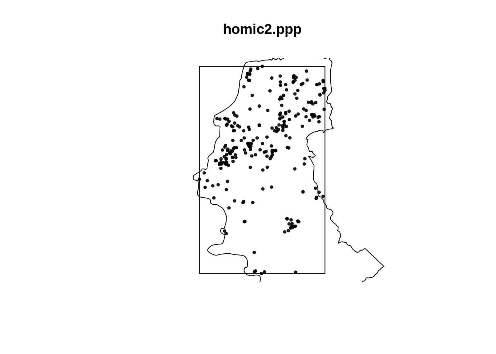
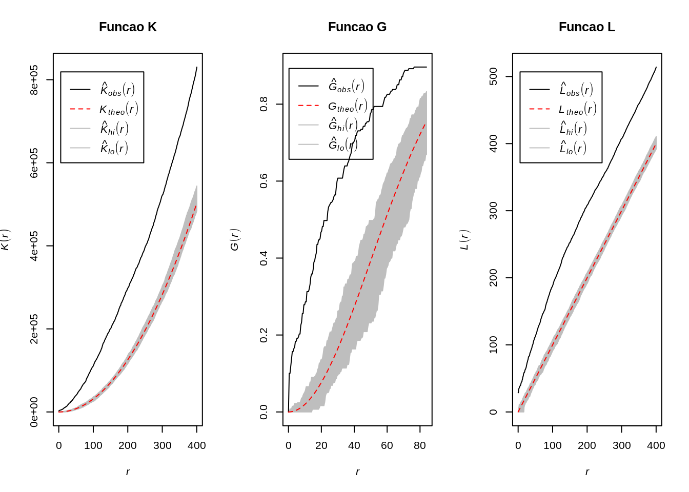
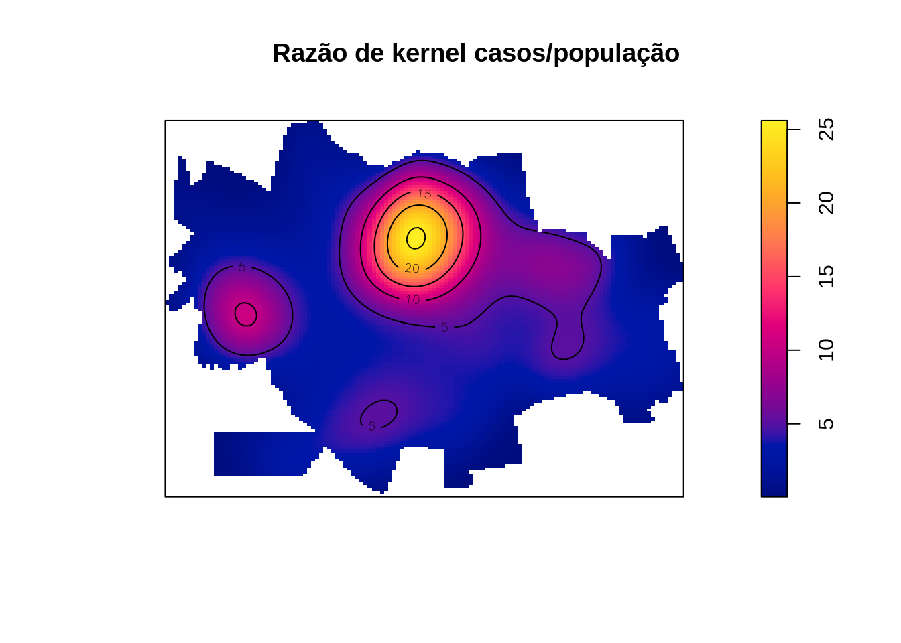
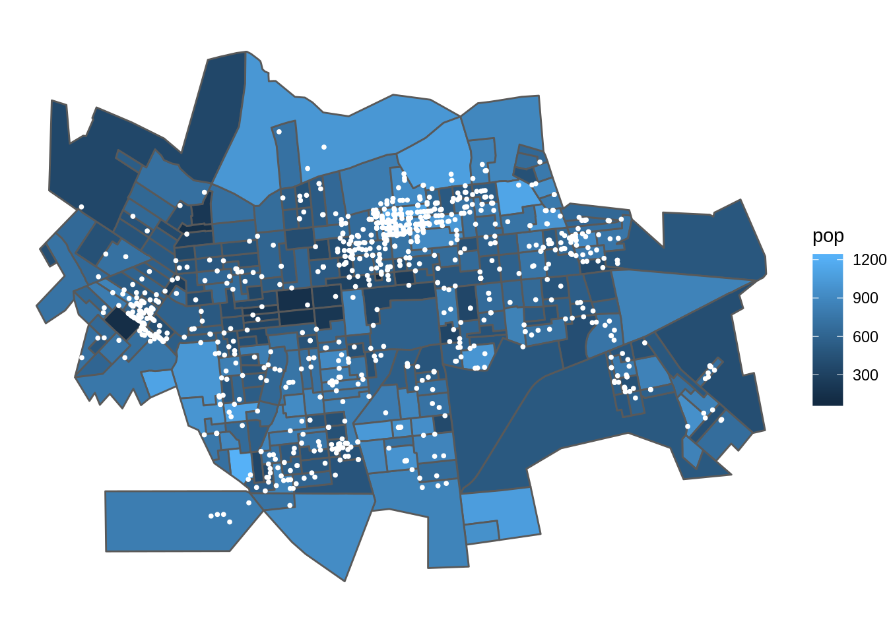

8 Padrões Pontuais II
8.1 Exemplo com os dados de dengue em Dourados/MS
Nesta aula serão utilizados os dados da monografia de Isis Rodrigues Reitman, apresentada ao Curso de Geografia da Faculdade de Ciências Humanas da Universidade Federal da Grande Douradosos/MS, em março de 2013. O título da monografia é “DISTRIBUIÇÃO ESPACIAL DOS CASOS DE DENGUE NO PERÍMETRO URBANO DE DOURADOS-MS E SUA RELAÇÃO COM OS FATORES SOCIOAMBIENTAIS E POLÍTICOS”
Lendo a tabela da população por setor censitário e baixando os shapes files do contorno e por setor censitário de Dourados/MS
local <- 'https://gitlab.procc.fiocruz.br/oswaldo/eco2019/raw/master/dados/'
pop2010 <- read_csv(paste0(local,'pop2010.csv'))
tmpdir <- tempdir()
download.file(paste0(local,'setores_dourados.zip'),
destfile = paste0(tmpdir,'/dourados.zip'))
unzip(zipfile = paste0(tmpdir,'/dourados.zip'),exdir = tmpdir)
dir(tmpdir)
setor <- read_sf(paste0(tmpdir,'/Setor_UTM_SIRGAS.shp'), crs = 31981)
contorno <- read_sf(paste0(tmpdir,'/contorno.shp'), crs = 31981)
popsetor <- setor %>% mutate (idsetor = as.numeric(CD_GEOCODI)) %>% inner_join(pop2010,by='idsetor') [1] "contorno.dbf" "contorno.sbn"
[3] "contorno.sbx" "contorno.shp"
[5] "contorno.shx" "dourados.zip"
[7] "Setor_UTM_SIRGAS.dbf" "Setor_UTM_SIRGAS.prj"
[9] "Setor_UTM_SIRGAS.sbn" "Setor_UTM_SIRGAS.sbx"
[11] "Setor_UTM_SIRGAS.shp" "Setor_UTM_SIRGAS.shx" - Lendo e plotando os casos de dengue georreferenciados em Dourados/MS
casos <- read_csv(paste0(local,'dengue_dourados.csv'))
casos.pt <- st_as_sf(casos, coords = c("X", "Y"), crs = 31981)
plot(casos.pt[-3],pch=19,cex=0.5) ## remove data
Plotando os casos de dengue segundo o sexo.

Plotando apenas o contorno de Dourados/MS.

Usando a ggplot() para fazer um gráfico do contorno e dos casos.
Formatando os pontos que representam os casos de dengue na classe ppp (point pattern)
cont.w <- as.owin(as_Spatial(contorno))
dengue.ppp <- ppp(casos$X,casos$Y,cont.w)
plot(dengue.ppp,pch=19,cex=0.5)
Uma vez que temos o objeto em formato ppp, podemos verificar a melhor largura de banda sugerida por vários métodos disponíveis pela biblioteca spatstat para os casos de Dengue em Dourados/MS.
| Nome | Comando R | Resultado |
|---|---|---|
| Diggle | bw.diggle(dengue.ppp) | 14.1335 |
| Cronie and van Lieshout’s (CvL) | bw.CvL(dengue.ppp) | 1630.7311 |
| Scoot | bw.scott(dengue.ppp) | 771.6202, 467.906 |
| likelihood cross-validation | bw.ppl(dengue.ppp) | 178.0477 |
Existem ainda outros métodos para determinar automaticamente a largura de banda. É possível usa-los para ajudar a escolher o melhor valor, mas é preciso verificar se essa largura de banda apresenta plausibilidade dentro do contexto do estudo.
Fazendo o mapa de kernel dos casos de dengue segundo várias larguras de banda.
par(mfrow=c(2, 2))
plot(density(dengue.ppp,250,diggle = TRUE),main='kernel 250 m',col=terrain.colors(64))
plot(density(dengue.ppp,500,diggle = TRUE),main='kernel 500 m',col=terrain.colors(64))
plot(density(dengue.ppp,750,diggle = TRUE),main='kernel 750 m',col=terrain.colors(64))
plot(density(dengue.ppp,1000,diggle = TRUE),main='kernel 1000 m',col=terrain.colors(64))
Fazendo o kernel segundo sexo, criando padrões para cada sexo e em seguida gerando um kernel para cada categoria.
masc <- casos %>% filter(CS_SEXO=='M')
masc.ppp <- ppp(masc$X,masc$Y,cont.w)
fem <- casos %>% filter(CS_SEXO=='F')
fem.ppp <- ppp(fem$X,fem$Y,cont.w)
D.masc <- density(masc.ppp,750,diggle = TRUE)
D.fem <- density(fem.ppp,750,diggle = TRUE)
par(mfrow=c(1, 2))
plot(D.masc, main='kernel Homens 750 m')
plot(D.fem, main='kernel Mulheres 750 m')
Fazendo a razão de kernel entre os sexos.
Como podemos observar no kernel acima, não foi detectada variabilidade espacial na razão entre os sexos. Observe o efeito de borda que ocorre no Norte, onde um único indivíduo do sexo masculido é responsável pelo efeito de borda.
Extraindo os centróides dos setores censitários de Dourados/MS.
centros <- st_centroid(st_geometry(popsetor) )
centros.tmp <- as.data.frame(as_Spatial(centros))
names(centros.tmp) <- c('X','Y')
centros.ppp <- ppp(centros.tmp$X,centros.tmp$Y,cont.w)
plot(centros.ppp,pch=19,cex=0.5)
Fazendo o kernel dos pontos dos centróides dos setores censitários de Dourados/MS. Tal distribuição, pode se sugerida como uma proxy da verdadeira distribuição populacional de Dourados/MS

Gerando um kernel de atributo com a população de cada setor censitário. O parâmetro weights nos permite entrar o valor do atributo a ser ponderado. Desta forma é possível gerar um kernel de um valor especificado (atributo).

Calculando a taxa média de casos (por 1.000 hab) de dengue do município de Dourados/MS
[1] 5.853Gerando a razão de kernel (casos/população) x 1000
Plotando a distribuição das taxas de ‘prevalência’ por dengue estimadas via razão de kernel. É possível verificar que a mediana das razões de kernel é bem próxima a taxa média de casos (por 1.000 hab) em Dourados/MS.

Sobrepondo a malha da população por setores censitários (dados de área) com os pontos de casos de dengue (padrões pontuais)
p1 <- ggplot(popsetor) +
geom_sf(aes(fill=pop)) +
geom_sf(data=casos.pt,color='white',size=0.7) +
theme_void()
print(p1)
Razão de casos confirmados vs não confirmados
Como verificamos abaixo temos 713 casos confirmados de Dengue e 304 não confirmados , será que existe algum padrão espacial para os casos não confirmados ?
FALSE TRUE
304 713 Para visualizarmos vamos inicialmente criar dois objetos do tipo ppp uma para confirmados e outro para não confirmados.
## Warning: data contain duplicated points
## Warning: data contain duplicated pointsplot(st_geometry(contorno))
points(Confirm.ppp,pch=19,cex=0.5, col="red")
points(NaoConfirm,pch=19,cex=0.5, col="blue")
title("Distribuição dos casos Confirmados e Não Confirmados")
legend("topright", legend=c("Confirmados", "Não Confirmados"),
col=c("red", "blue"), pch = 19, cex=1,
title="Legenda", bg='lightblue')
Em seguida vamos fazer um kernel para cada um deles.
Aparentemente existem diferenças nos padrões dos casos confirmados e descartados de dengue. O proximo passo é fazer uma razão de kernel para averiguar essa diferença de padrões.

A razão não evidencia grande diferença, por que ?
Qual seria a melhor maneira de evidenciar essa diferença ?
8.2 Modelos Generalizados Aditivos (GAM)
- Um modelo aditivo generalizado (Hastie and Tibishirani, 1990) é um modelo linear generalizado com um preditor linear envolvendo a soma de funções suavizadas das covariáveis + os efeitos fixos das mesmas.
\[\eta = \sum X \beta + f_1(x_{1i}) + f_2(x_{2i}) + \ldots\]
8.3 Modelos Espaciais Generalizados Aditivos
- São modelos aditivos generalizados tendo como um dos preditores o efeito suavizado das componentes espaciais.
\[\eta = \sum X \beta + f_1(x_{1i}) + f_2(x_{2i}) + f_3(latitude_{i}, longitude_{i}) + \ldots\]
Exemplo GAM Dourados - Tipo Caso/Controle
Vamos ajustar um modelo GAM do tipo “caso/controle”, onde casos serão representados pelos casos de dengue confirmados e controles os casos não confirmados.
Family: binomial
Link function: logit
Formula:
CLASSI_FIN == 1 ~ s(X, Y)
Parametric coefficients:
Estimate Std. Error z value Pr(>|z|)
(Intercept) 1.0069 0.0795 12.7 <2e-16 ***
---
Signif. codes: 0 '***' 0.001 '**' 0.01 '*' 0.05 '.' 0.1 ' ' 1
Approximate significance of smooth terms:
edf Ref.df Chi.sq p-value
s(X,Y) 21.9 26.2 144 <2e-16 ***
---
Signif. codes: 0 '***' 0.001 '**' 0.01 '*' 0.05 '.' 0.1 ' ' 1
R-sq.(adj) = 0.161 Deviance explained = 14.7%
UBRE = 0.085615 Scale est. = 1 n = 1017- Podemos observar que o modelo espacial vazio parace evidenciar que o componente espacial *s(X,Y) é significativo, ou seja, existe indícios que o espaço geográfico está influenciando a variável de desfecho.
Agora vamos verificar a saída gráfica original do modelo.

- Essa saída não parece ser muito intuitiva, apesar ser possível observarmos as áreas onte apresentão ‘pistas’ de haver um risco maior e as áreas onde estão mais isentas de casos de dengue.
Vamos agora tentar melhorar tal saída gráfica.
Podemos também inspecionar a superfície do erro padrão do modelo.

Note que no centro, onde existe a maior qunatidade de pontos, o erro e bem menor que nas áreas onde existem menos pontos e nas bordas !
8.4 Bibliografia sugerida
Wood, S.N. (2017) Generalized Additive Models: an introduction with R (2nd edition), CRC.